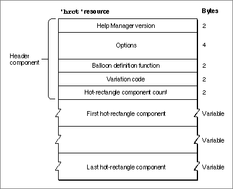
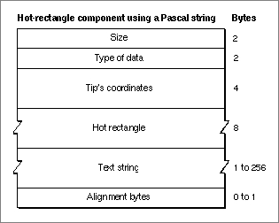
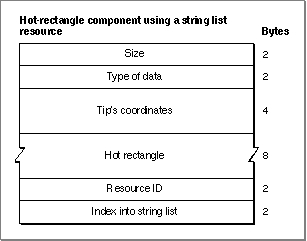
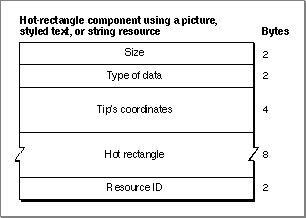
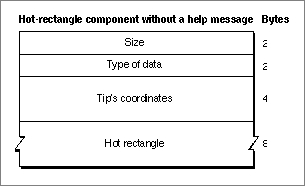

The Rectangle Help Resource
You can use a rectangle help resource to define hot rectangles for displaying help balloons within a static window, and to specify the help messages for those balloons. A rectangle help resource is a resource of type'hrct'. All'hrct'resources must have resource IDs greater than 128.To associate the hot rectangles and help messages defined in an
'hrct'resource with a particular window, you must also create a window help ('hwin') resource, which is described in "Associating Help Resources With Static Windows" on page 3-63.The format of a Rez input file for an
'hrct'resource differs from its compiled output form. This section describes the structure of a Rez-compiled'hrct'resource. If you are concerned only with creating'hrct'resources, see "Specifying Help for Rectangles in Windows" on page 3-62 for a detailed description of how to use Rez input files to create'hrct'resources.An
'hrct'resource consists of a header component and a variable number of hot-rectangle components. Figure 3-35 shows the general structure of a compiled'hrct'resource.Figure 3-35 Structure of a compiled rectangle help (
'hrct') resource
If you examine a compiled version of an'hrct'resource, you find that the header component consists of the following elements:The Help Manager determines the end of the
- Help Manager version. The version of the Help Manager to use. This is usually specified in a Rez input file with the
HelpMgrVersionconstant.- Options. The sum of the values of available options, described in "Specifying Options in Help Resources" beginning on page 3-22.
- Balloon definition function. The resource ID of the window definition function used for drawing the help balloon. The standard balloon definition function is of type
'WDEF'with resource ID 126; this can be specified by 0 in the Rez input file.- Variation code. A number signifying the preferred position of the help balloon relative to the hot rectangle. The balloon definition function draws the frame of the help balloon based on the variation code specified here. The eight variation codes and how they affect the standard balloon definition function are illustrated in Figure 3-4 on page 3-9.
- Hot-rectangle component count. The number of hot-rectangle components defined in the rest of this resource.
'hrct'resource by using the component count information in the header component.The structures of the hot-rectangle components depend on identifiers specified inside the components. The identifiers used in a Rez input file are described in "Specifying the Format for Help Messages" on page 3-21.
Figure 3-36 shows the structure of a component that stores its help message as a Pascal string within the
'hrct'resource itself.Figure 3-36 Structure of an
'hrct'component compiled with theHMStringItemidentifier
If you examine a compiled version of an'hrct'resource, you find that a component identified in a Rez input file by theHMStringItemidentifier consists of the following elements:Figure 3-37 shows the structure of a hot-rectangle component that specifies its help message as a text string stored in a string list (
- Size. The number of bytes contained in this component.
- Type of data. The value 1 is specified here when the help message is stored as a Pascal string within this component.
- Tip's coordinates. The coordinates of the help balloon's tip. The tip's coordinates are local to the window.
- Hot rectangle. The coordinates (local to the window) of a rectangle. The Help Manager displays a help message when the user moves the cursor over this rectangle.
- Text string. The help message that the Help Manager displays when the user moves the cursor over the hot rectangle.
- Alignment bytes. Zero or one bytes used to make the previous text strings end on a word boundary.
'STR#') resource.Figure 3-37 Structure of an
'hrct'component compiled with theHMStringResItemidentifier
If you examine a compiled version of an'hrct'resource, you find that a component identified in a Rez input file by theHMStringResItemidentifier consists of the following elements:Figure 3-38 shows the structure of a hot-rectangle component that specifies its help message in a picture (
- Size. The number of bytes contained in this component.
- Type of data. The value 3 is specified here when the help message for this component is stored in an
'STR#'resource.- Tip's coordinates. The coordinates of the help balloon's tip. The tip's coordinates are local to the window.
- Hot rectangle. The coordinates (local to the window) of a rectangle. The Help Manager displays a help message when the user moves the cursor over this rectangle.
- Resource ID. The resource ID of an
'STR#'resource.- Index into the string list resource. A number used as an index to a particular text string within the
'STR#'resource. When the user moves the cursor over the hot rectangle, the Help Manager displays this text string for the help message.'PICT') resource, in styled text ('TEXT'and'styl') resources, or in a string ('STR ') resource.Figure 3-38 Structure of an
'hrct'component compiled with theHMPictItem,HMTEResItem, orHMSTRResItemidentifier
If you examine a compiled version of an'hrct'resource, you find that a component identified in a Rez input file by either theHMPictItem,HMTEResItem, orHMSTRResItemidentifier consists of the following elements:Figure 3-39 shows the structure of a hot-rectangle component that doesn't specify a help message.
- Size. The number of bytes contained in this component.
- Type of data.
- The value 2 is specified here when the help message for this component is stored in a
'PICT'resource.- The value 6 is specified here when the help message for this component is stored as styled text--that is, in both
'TEXT'and'styl'resources.- The value 7 is specified here when the help message for this component is stored in an
'STR 'resource.- Tip's coordinates. The coordinates of the help balloon's tip. The tip's coordinates are local to the window.
- Hot rectangle. The coordinates (local to the window) of a rectangle. The Help Manager displays a help message when the user moves the cursor over this rectangle.
- Resource ID.
- The resource ID of a
'PICT'resource when the value 2 is specified as the type of data. When the user moves the cursor over the hot rectangle, the Help Manager displays the picture stored in this resource for the help message.- The resource ID common to both a
'TEXT'and an'styl'resource when the value 6 is specified as the type of data. When the user moves the cursor over the hot rectangle, the Help Manager displays the styled text specified in these resources for the help message.- The resource ID of an
'STR 'resource when the value 7 is specified as the type of data. When the user moves the cursor over the hot rectangle, the Help Manager uses the text string stored in this resource for the help message.Figure 3-39 Structure of an
'hrct'component compiled with theHMSkipItemidentifier
If you examine a compiled version of an'hrct'resource, you find that a component identified by theHMSkipItemidentifier consists of the following elements:
- Size. The value 4, for the number of bytes contained in this component.
- Type of data. The value 256.
- Tip's coordinates. In this instance, the Help Manager does not use this information because it does not display a help balloon.
- Hot rectangle. The coordinates (local to the window) of a rectangle that is to be skipped. When the user moves the cursor over this rectangle, the Help Manager does not display any help messages.